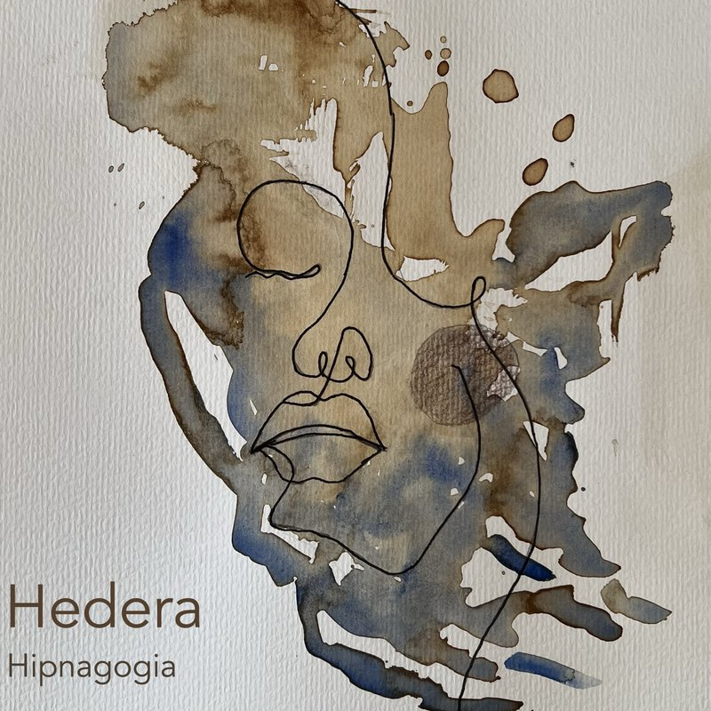

Música desde el umbral del sueño
Escuchar
Primer álbum

Hedera™
2026
Tres canciones. Dos nacidas en el umbral del sueño, una en la vigilia. Grabadas con una guitarra española de hace cuarenta años, voz y nada más. Carátula pintada con café y acuarela.
Método
Un método de composición musical que utiliza como materia prima el contenido que emerge en los estados hipnagógicos — ese territorio entre la vigilia y el sueño donde el cerebro genera frases, imágenes y melodías de forma espontánea.
El término viene de Lévi-Strauss: el bricoleur trabaja con los materiales que tiene a mano. En este caso, los materiales son fragmentos capturados al borde del sueño y transformados en canciones a través de un proceso de seis pasos.
Captura
Registro inmediato de frases, visiones y melodías que emergen en la transición al sueño. Una grabadora junto a la cama. Los ojos aún cerrados.
Extracción semántica
Selección de los fragmentos con mayor potencial expresivo: neologismos, frases imposibles, imágenes que solo existen en ese estado.
Estructura métrica
El material divergente se encaja en cajas rítmicas funcionales. La prosodia como herramienta de resolución entre lo onírico y lo musical.
Extracción melódica
Selección de motivos melódicos de las grabaciones. Las melodías del trance, aisladas y listas para anclar.
Armonización
Creación consciente de la progresión armónica. Aquí la vigilia encuentra al sueño: la estructura sostiene el material liminal.
Ensamblaje
Melodía, armonía y texto se integran en una canción terminada. El fragmento más extraño del trance se reserva para el bridge.
Sobre Hedera
Hedera es el nombre artístico de un cantautor de Madrid. El nombre viene de un poema que su madre recitaba de memoria — siempre el mismo poema, sobre una hiedra — en los años en que la demencia iba borrando todo lo demás pero dejó intactos esos versos.
Guitarrista desde los 14 años, pianista desde los 52. Más de 30 canciones registradas en el Registro de la Propiedad Intelectual. Ingeniero de formación, músico por necesidad. La música siempre estuvo ahí; simplemente tardó en ser lo primero.
Desde 2025, Hedera compone con un método propio — Bricolaje Sonoro — que utiliza material capturado en estados hipnagógicos como materia prima. Pero las canciones de antes del método también son suyas, también son reales, y también están aquí.
«Mi madre recitaba el poema de la hiedra cuando ya no recordaba nada más. Esos versos sobrevivieron a todo. Hedera es eso: lo que queda cuando lo demás se va.»
Cada pieza de Hedera tiene huellas dactilares encima — literal y metafóricamente. El material sonoro viene de estados liminales reales. Las canciones se graban con una guitarra española comprada a los 17 años, en casa, esperando el momento de silencio. La carátula está pintada con café y acuarela. Con las manos. Sobre papel.
En la era de la IA generativa, eso no es una limitación. Es una declaración.